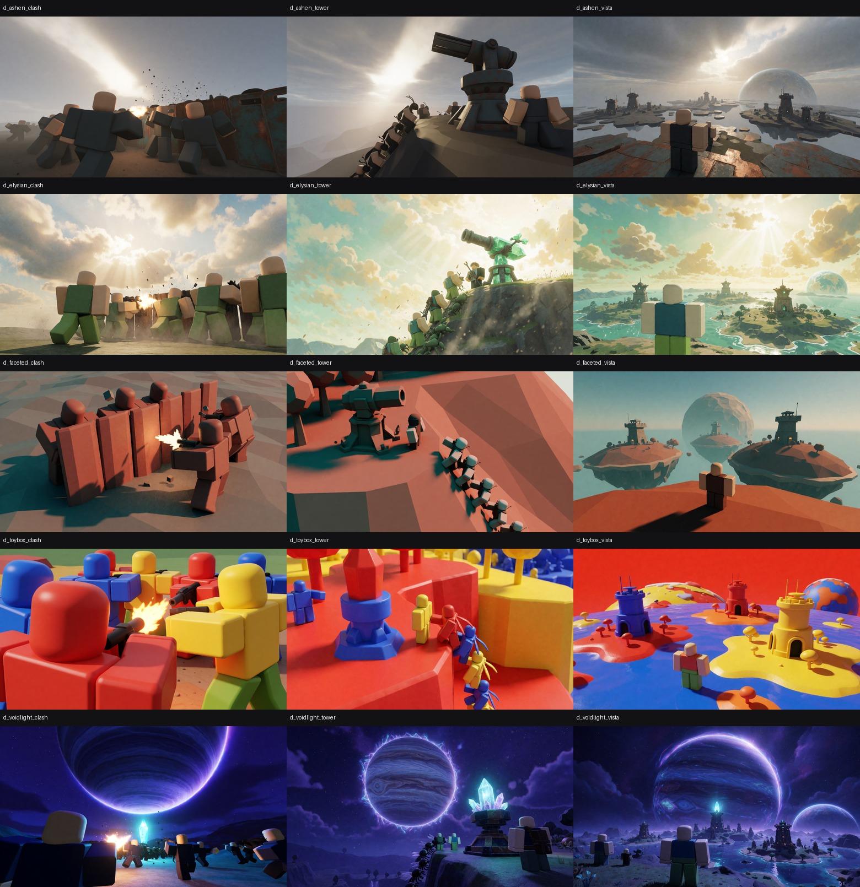
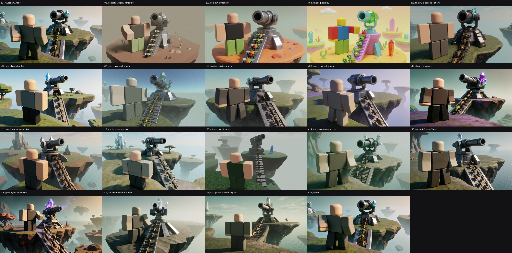
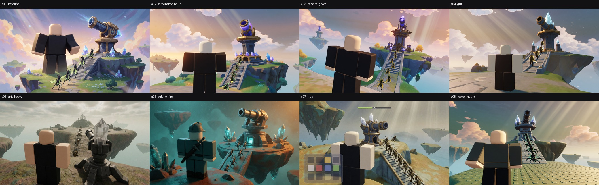

164 plates, rendered locally on Krea 2 Turbo (fp8, RTX 5090) across 28 game moments, 14 worlds and 13 art directions. Every prompt is composed from a catalogue row, never hand-typed, so a look can be changed once and re-rendered everywhere. Click any plate for its full prompt, seed and LoRA.
Each board below cost a render batch and changed the shipping prompt. “in-game screenshot from a third-person gameplay camera” is what buys gameplay framing; without it Krea 2 makes a hero portrait every time. A named palette plus a named light direction is what buys the Genshin-grade read — not the words “Genshin Impact”. Grit has a ceiling: one step past the shipping strength and the look dies. And HUD renders clean when it is described as a positive surface — “plain unlettered icon tiles of solid colour” — with no negation anywhere.


